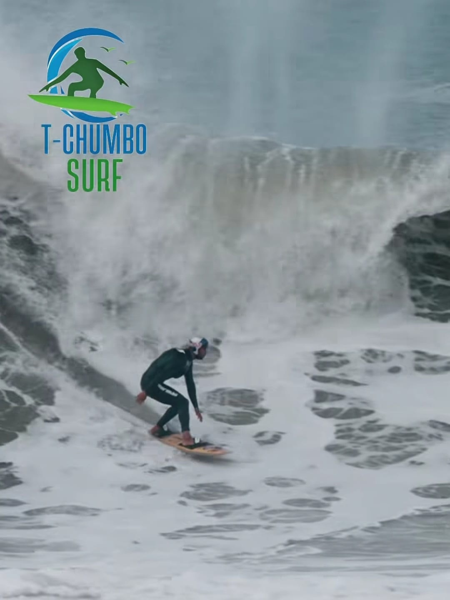

Rio de JaneiroBarra da Tijuca • Rio de Janeiro
Orla aberta com múltiplas bancadas ao longo da costa, proporcionando excelente dinâmica náutica e espaço para o surf rebocado na capital carioca.
- Extensa faixa marítima favorável à navegação técnica
- Consistência de ondulações ideal para treino e velocidade
- Acesso prático na capital com sessões planejadas conforme o mar